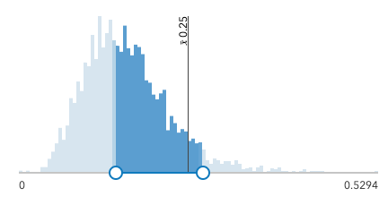

Time
We increased our capabilities to visualize temporal data in both 2D MapViews and 3D SceneViews. We added the TimeInterval class to describe a length of time in different temporal units, which is referenced by time-aware layers and the TimeSlider widget.
The beta version of the TimeSlider widget simplifies time manipulation in your application, and can be configured to update the View's timeExtent, which means all time aware layers will update their contents to conform to this change. You can also use TimeSlider widget to visualize temporal data on the client-side by setting filters or effects on FeatureLayerView, CSVLayerView, and GeoJSONLayerView.
We will continue to add more support for time-awareness. This includes, but is not limited to, adding timeExtent properties on layers that store temporal data, allowing layers to follow their own timeline without having to follow View.timeExtent, and continued improvements and enhancements to the TimeSlider widget.
See the TimeSlider widget sample and the Filter features with TimeSlider sample for examples.
Performance improvements
Vector tile layers now load 50% faster due to improved vector tile fetching including more parallelization of requests, and tile processing optimizations. Feature layer rendering improved due to optimizations related to triangulation of geometries. Triangulation processing improved without reducing quality. Load time of 2D maps has been reduced thanks to revamped tessellators. This improves the speed, accuracy and memory profile of the core algorithms. We also added adaptive switching strategies to select the most appropriate for a given situation.
Drawing improvements include faster processing of data values in visualizations so they can be updated more rapidly, providing a better user experience and improved performance. FeatureLayer updates are faster when changing the variable driving the visualization. The animation below showcases the change between 4.11 and 4.12.

Scene layer performance continues to improve: 3D objects SceneLayer and IntegratedMeshLayer load and display on average twice as fast using the new I3S specification version 1.7. In addition, a new client-side caching helps reduce areas without data when exploring a 3D scene. To experience this increased performance you can convert your existing SLPKs with the I3S Converter tool. For more details read the Working with scene layers guide topic.
API Modernization
We made several updates to modernize the API. These updates allow us to take more advantage of APIs available natively in modern web browsers.
- 93% of the codebase is written in TypeScript.
- esri/request now uses the Fetch API internally to request resources. When not available (e.g. with IE11), we use a fetch polyfill instead.
- Most asynchronous methods in the API now support an optional
signalparameter of type AbortSignal. See Asynchronous Method Cancellation for more information. - A new
hasflag is available to enable native JavaScript promises. Currently, promises returned from any asynchronous function return a Dojo promise. With this flag, those same functions can now return a JavaScript promise. More details about this functionality will be available in an upcoming blog post.
<script>
var dojoConfig = {
has: {
"esri-native-promise": true
}
};
</script>
Client-side queries in 3D
The SceneLayerView and FeatureLayerView now support pure client-side queries that don't require a roundtrip to the server. Interactively select features and display statistics using spatial- and attribute-based expressions. A new sample shows how you can query a SceneLayerView for statistics on the features that match the query.
Water rendering
Add animated water visualizations to your 3D scenes using the new WaterSymbol3DLayer. Whether looking at an ocean from far away or a lake close-up, the new water polygon style allows you to create realistic views, such as sunlight reflections off the water.
2D WebStyleSymbols
We added support for 2D WebStyleSymbols. This adds over 100 high quality symbols that are available to use in 2D MapViews. See Esri Web Style Symbol (2D) guide page for supported symbols hosted by Esri. These symbols are based on CIM (Cartographic Information Model). The CIMSymbol class allows users to create symbols that are composed of multiple SymbolLayers with many customizable visualization options available to the user. See the WebStyleSymbol (2D) sample and the CIMSymbol sample for examples.
New 3D WebStyleSymbols
New 3D models in the Esri Web Style Symbol (3D), such as bicycles and fire hydrants, allow you to further customize your scenes. Additionally, Infrastructure and Recreation web styles were added to the gallery. We also added an automatic level of detail to Schematic Trees to maintain strong performance in scenes with a large number of trees.
Smart Mapping updates
The Smart Mapping visualization APIs reached full parity with the 3.x series, and added additional functionality. This includes: scale-dependent visualizations, support for dot density renderers, 3D support for lines and polygons, and slider widgets.
Scale-dependent visualizations
The following scale enhancements only apply to renderers in 2D MapViews.
Outline size by scale - The outlineOptimizationEnabled parameter was added to all renderer creator methods for polygon layers. When set to true, the generated renderer will include symbol outlines that dynamically their change width by view scale.
| outlines not visible | visible, not prominent | prominent |
|---|---|---|
Size range by scale - The sizeOptimizationEnabled parameter was added to the following renderer creator methods for polygon layers. When set to true, the sizes of generated icons will dynamically change based on the view scale. Internally, this option uses the new sizeRange function to determine the appropriate size range by scale. This only applies to data-driven visualizations involving size visual variables.
- predominanceRendererCreator.createRenderer()
- sizeRendererCreator.createVisualVariables()
- sizeRendererCreator.createContinuousRenderer()
- sizeRendererCreator.createAgeRenderer()
- univariateColorSizeRendererCreator.createContinuousRenderer()
Suggested layer visibility by scale - The scaleRange function was added as a convenience for suggesting the min and max scale ranges for any layer in a given view.
Dot density
The dotDensityRendererCreator.createRenderer() method was added to the new dotDensity smart mapping module. This is a helper method for generating a DotDensityRenderer with a suggested dotValue appropriate for the scale of the view where the renderer will be displayed. This is intended exclusively for visualization authoring apps and data exploration applications.
3D support for lines and polygons
All renderer creator methods in the following modules now support polyline and polygon layers in 3D SceneViews:
- esri/renderers/smartMapping/creators/color
- esri/renderers/smartMapping/creators/location
- esri/renderers/smartMapping/creators/opacity
- esri/renderers/smartMapping/creators/relationship
- esri/renderers/smartMapping/creators/type
Slider widgets
The following are new slider widgets intended for helping users explore, update, and author renderers.
- esri/widgets/smartMapping/ClassedColorSlider
- esri/widgets/smartMapping/ClassedSizeSlider
- esri/widgets/smartMapping/ColorSlider
- esri/widgets/smartMapping/ColorSizeSlider
- esri/widgets/smartMapping/HeatmapSlider
- esri/widgets/smartMapping/OpacitySlider
- esri/widgets/smartMapping/SizeSlider
The following widgets are removed from the JS API at version 4.12 in favor of their counterparts above:
esri/widgets/ColorSlideresri/widgets/SizeSlideresri/widgets/UnivariateColorSizeSlider
Color scheme updates
We added tags and names to all smart mapping color schemes and provided methods for querying schemes by tags and names. This makes it easier to work with color ramps available via the smart mapping APIs for renderer authoring applications. All symbology modules now have getSchemeByName(), getSchemesByTag(), and getThemes() methods.
New 3D Line Symbols
The new square profile on PathSymbol3DLayer, allows you to visualize 3D lines with square, strips and walls styles. As with other symbols this new profile also supports attribute driven size or color using VisualVariables.
Combine the path profiles with the new configuration options for cap, join and profileRotation to enhance the visualization style for line features such as streets or geographical boundaries. You can try out these new properties in the Path visualization in 3D sample.
Filters on BuildingSceneLayer
The BuildingSceneLayer allows you to render detailed 3D building models. With this release we added support for filters, so that you can create applications that isolate floors, highlight building materials or visualize construction phases. Define a BuildingFilter on the filters property of the BuildingSceneLayer and it automatically applies to all sublayers.
Asynchronous Method Cancellation
Most asynchronous methods in the API now support an optional signal parameter of type AbortSignal. This allows for cancellable requests. If aborted, the promise is rejected with an error named AbortError. See also AbortController. To know if an asynchronous method supports signal, look at the methods parameters in the API reference.
Here is an example where we pass the controller's signal to the queryFeatures method. If the request returns an error with the name AbortError, then we print a useful error message in the console.
const controller = new AbortController();
const signal = controller.signal;
layer.queryFeatures({ where: "CITYNAME = 'Redlands'" }, {
signal
})
.then(
function (result){
console.log("Features:", result.features);
},
function (error){
if (error.name === "AbortError") {
console.error("query timed out");
return;
}
console.error(error);
}
);
Geodetic computations
We added a new class, esri/geometry/support/geodesicUtils, that performs geodetic computations for Earth and non-Earth spheroids. This class has some methods that are similar to geometryEngine methods. Reference the table below to compare the functionality available in each class.
| Functionality | geometryEngine | geodesicUtils |
|---|---|---|
| Coordinate Systems | Web Mercator, WGS84 | WGS84, 75 non-Earth geographic coordinate systems |
| geodesicArea(s) | single polygon | multiple polygons |
| geodesicDensify | yes | yes |
| geodesicDistance | no | yes |
| geodesicLength(s) | single geometry | multiple geometries |
| pointFromDistance | no | yes |
Labeling updates
We added support for CSS names for font.family property values for FeatureLayer, CSVLayer, and StreamLayer in 2D MapViews. For example, we now recommend using Old Standard TT instead of old-standard-tt. However, the old naming convention will still work. For more information and examples, please refer to Fonts for FeatureLayer, CSVLayer, and StreamLayer.
For both 2D MapViews and 3D SceneViews, we enhanced the labelClass.where property to accept more advanced SQL statements, and we added a default symbol to labelClass.symbol. Lastly, in 3D SceneViews, we improved the label placement around extruded polygons.
Date and number formatting updates
Multiple updates were made to streamline date and number formatting functionality. Date formatting is now better at recognizing regional differences. Prior to this version, the order of date components always followed US English (en-US) rules, e.g. Monday, June 24, 2019, 2:28 PM (Day of the week, Month Day, Year, time in 12 hours cycle). In addition, a new esri/intl class was added which provides helper methods used for formatting dates, numbers, and template strings.
With these updates, there comes a couple notable breaking changes. These changes pertain to out-of-the-box function formatters, ie. DateString, DateFormat, and NumberFormat, as they are no longer supported with the PopupTemplate.content. Instead, set it via the FieldInfo's fieldInfoFormat. Another change is that the PopupTemplate's content can no longer be set using a wildcard, e.g. *. Instead, set the Popup's defaultPopupTemplateEnabled property to true.
var popupTemplate = new PopupTemplate({
title: "Population in {NAME}",
content: "As of 2010, the population in this area was <b>{POP2010:NumberFormat}</b>." +
"As of 2013, the population here was <b>{POP2013:NumberFormat}</b>." +
"Percent change is {POP2013:populationChange}"
});
populationChange = function (value, key, data) {
// calculate the population percent change from 2010 to 2013.
}
Widgets
New widgets
The following widgets are new at version 4.12:
esri/widgets/Slider - A generic slider that can be used for gathering any kind of user input involving numbers or a range of values.
esri/widgets/TimeSlider - A slider that can be used to manipulate time visualization in your application.
esri/widgets/HistogramRangeSlider - A slider that renders a histogram along the range for gathering user input involving a range of data values.

esri/widgets/Histogram - Renders a histogram that can be customized with styles and interactions for exploring data.
New Smart mapping widgets
We also added the following smart mapping widgets:
- esri/widgets/smartMapping/ClassedColorSlider
- esri/widgets/smartMapping/ClassedSizeSlider
- esri/widgets/smartMapping/ColorSlider
- esri/widgets/smartMapping/ColorSizeSlider
- esri/widgets/smartMapping/HeatmapSlider
- esri/widgets/smartMapping/OpacitySlider
- esri/widgets/smartMapping/SizeSlider
Updates to Popup widget
The Popup widget UI has been redesigned. Beginning with 4.12, actions defined on the PopupTemplate appear before those defined on the Popup widget. The actionsMenuEnabled property was removed from Popup widget as it was no longer needed with the updates made to the UI.
| Popup UI - 4.11 | Popup UI - 4.12 |
|---|---|
API updates and enhancements
- PortalUser.addItem now accepts a
Stringin addition to a PortalFolder. - Added fromJSON() method to the WebMap Class.
- Added a default symbol to labelClass.symbol for labelling in 2D MapViews and 3D SceneViews.
- Added a new
metadata.supportsAdvancedFieldPropertiesproperty to FeatureLayer.capabilities. - Added an AbortSignal object as an optional parameter for all asynchronous methods.
- Added an
errorproperty to RequestInterceptor, which returns a function that passes an Error object. - Added class esri/geometry/support/geodesicUtils.
- Added class esri/intl.
- Added class esri/layers/support/FieldsIndex.
- Added class esri/layers/support/RasterInfo.
- Added class esri/renderers/smartMapping/creators/dotDensity.
- Added class esri/renderers/smartMapping/heuristics/scaleRange.
- Added class esri/renderers/smartMapping/heuristics/sizeRange.
- Added class esri/renderers/smartMapping/symbology/dotDensity.
- Added class esri/renderers/support/ClassBreakInfo.
- Added class esri/renderers/support/UniqueValueInfo.
- Added class esri/symbols/CIMSymbol.
- Added class esri/symbols/WaterSymbol3DLayer.
- Added class esri/TimeInterval.
- Added class esri/webdoc/applicationProperties/Search.
- Added class esri/webdoc/applicationProperties/SearchLayer.
- Added class esri/webdoc/applicationProperties/SearchLayerField.
- Added class esri/webdoc/applicationProperties/Viewing.
- Added class esri/widgets/Histogram/HistogramViewModel.
- Added class esri/widgets/Histogram.
- Added class esri/widgets/HistogramRangeSlider/HistogramRangeSliderViewModel.
- Added class esri/widgets/HistogramRangeSlider.
- Added class esri/widgets/Slider/SliderViewModel.
- Added class esri/widgets/Slider.
- Added class esri/widgets/smartMapping/ClassedColorSlider/ClassedColorSliderViewModel.
- Added class esri/widgets/smartMapping/ClassedColorSlider.
- Added class esri/widgets/smartMapping/ClassedSizeSlider/ClassedSizeSliderViewModel.
- Added class esri/widgets/smartMapping/ClassedSizeSlider.
- Added class esri/widgets/smartMapping/ColorSizeSlider/ColorSizeSliderViewModel.
- Added class esri/widgets/smartMapping/ColorSizeSlider.
- Added class esri/widgets/smartMapping/ColorSlider/ColorSliderViewModel.
- Added class esri/widgets/smartMapping/ColorSlider.
- Added class esri/widgets/smartMapping/HeatmapSlider/HeatmapSliderViewModel.
- Added class esri/widgets/smartMapping/HeatmapSlider.
- Added class esri/widgets/smartMapping/OpacitySlider/OpacitySliderViewModel.
- Added class esri/widgets/smartMapping/OpacitySlider.
- Added class esri/widgets/smartMapping/SizeSlider/SizeSliderViewModel.
- Added class esri/widgets/smartMapping/SizeSlider.
- Added class esri/widgets/smartMapping/SmartMappingSliderBase.
- Added class esri/widgets/smartMapping/support/utils.
- Added class esri/widgets/Spinner/SpinnerViewModel.
- Added class esri/widgets/TimeSlider/TimeSliderViewModel.
- Added class esri/widgets/TimeSlider.
- Added event layerview-create-error to esri/layers/BaseDynamicLayer.
- Added event layerview-create-error to esri/layers/BaseElevationLayer.
- Added event layerview-create-error to esri/layers/BaseTileLayer.
- Added event layerview-create-error to esri/layers/BingMapsLayer.
- Added event layerview-create-error to esri/layers/BuildingSceneLayer.
- Added event layerview-create-error to esri/layers/CSVLayer.
- Added event layerview-create-error to esri/layers/ElevationLayer.
- Added event layerview-create-error to esri/layers/GeoJSONLayer.
- Added event layerview-create-error to esri/layers/GeoRSSLayer.
- Added event layerview-create-error to esri/layers/GraphicsLayer.
- Added event layerview-create-error to esri/layers/GroupLayer.
- Added event layerview-create-error to esri/layers/ImageryLayer.
- Added event layerview-create-error to esri/layers/IntegratedMeshLayer.
- Added event layerview-create-error to esri/layers/KMLLayer.
- Added event layerview-create-error to esri/layers/Layer.
- Added event layerview-create-error to esri/layers/MapImageLayer.
- Added event layerview-create-error to esri/layers/MapNotesLayer.
- Added event layerview-create-error to esri/layers/OpenStreetMapLayer.
- Added event layerview-create-error to esri/layers/PointCloudLayer.
- Added event layerview-create-error to esri/layers/SceneLayer.
- Added event layerview-create-error to esri/layers/StreamLayer.
- Added event layerview-create-error to esri/layers/TileLayer.
- Added event layerview-create-error to esri/layers/UnknownLayer.
- Added event layerview-create-error to esri/layers/UnsupportedLayer.
- Added event layerview-create-error to esri/layers/VectorTileLayer.
- Added event layerview-create-error to esri/layers/WebTileLayer.
- Added event layerview-create-error to esri/layers/WMSLayer.
- Added event layerview-create-error to esri/layers/WMTSLayer.
- Added event layerview-create-error to esri/views/MapView.
- Added event layerview-create-error to esri/views/SceneView.
- Added event layerview-create-error to esri/views/View.
- Added events edits, layerview-create-error to esri/layers/FeatureLayer.
- Added method clone to esri/portal/PortalItem.
- Added method createElevationSampler to esri/geometry/support/meshUtils.
- Added method createQuery to esri/views/layers/CSVLayerView.
- Added method createQuery to esri/views/layers/FeatureLayerView.
- Added method createQuery to esri/views/layers/GeoJSONLayerView.
- Added method createQuery to esri/views/layers/SceneLayerView.
- Added method createQuery to esri/views/layers/support/FeatureFilter.
- Added method debounce to esri/core/promiseUtils.
- Added method fromJSON to esri/tasks/support/ImageServiceIdentifyParameters.
- Added method fromJSON to esri/WebMap.
- Added method generateRasterInfo to esri/layers/ImageryLayer.
- Added method getThemes to esri/renderers/smartMapping/symbology/location.
- Added method getThemes to esri/renderers/smartMapping/symbology/size.
- Added method intersection to esri/TimeExtent.
- Added method renderDotDensityPreview to esri/symbols/support/symbolUtils.
- Added method toExportImageJSON to esri/layers/support/Sublayer.
- Added method tryFatalErrorRecovery to esri/views/MapView.
- Added method tryFatalErrorRecovery to esri/views/SceneView.
- Added method tryFatalErrorRecovery to esri/views/View.
- Added methods createClosestFacilityTask, createElevationLayers, createGeometryService, createPrintTask, createRouteTask, createServiceAreaTask to esri/portal/Portal.
- Added methods createElevationSampler, queryElevation to esri/layers/BaseElevationLayer.
- Added methods emit, hasEventListener, on to esri/widgets/FeatureTemplates/FeatureTemplatesViewModel.
- Added methods getField, getFieldDomain to esri/layers/buildingSublayers/BuildingComponentSublayer.
- Added methods getField, getFieldDomain to esri/layers/SceneLayer.
- Added methods getSchemeByName, getSchemesByTag to esri/renderers/smartMapping/symbology/color.
- Added methods getSchemeByName, getSchemesByTag to esri/renderers/smartMapping/symbology/heatmap.
- Added methods getSchemeByName, getSchemesByTag, getThemes to esri/renderers/smartMapping/symbology/predominance.
- Added methods getSchemeByName, getSchemesByTag, getThemes to esri/renderers/smartMapping/symbology/relationship.
- Added methods getSchemeByName, getSchemesByTag, getThemes to esri/renderers/smartMapping/symbology/type.
- Added properties activeFilterId, filters, maxScale, minScale to esri/layers/BuildingSceneLayer.
- Added properties anchor, cap, height, join, profile, profileRotation, width to esri/symbols/PathSymbol3DLayer.
- Added properties cap, join to esri/symbols/LineSymbol3DLayer.
- Added properties description, valueType to esri/layers/support/Field.
- Added properties dotBlendingEnabled, dotValue, seed to esri/renderers/DotDensityRenderer.
- Added properties editingInfo, fieldsIndex to esri/layers/FeatureLayer.
- Added properties fatalError, timeExtent to esri/views/MapView.
- Added properties fatalError, timeExtent to esri/views/SceneView.
- Added properties fatalError, timeExtent to esri/views/View.
- Added properties fieldsIndex, maxScale, minScale, outFields to esri/layers/SceneLayer.
- Added properties fieldsIndex, timeInfo to esri/layers/StreamLayer.
- Added properties fullTimeExtent, interval to esri/layers/support/TimeInfo.
- Added properties interpolation, legendEnabled, noData, noDataInterpretation, objectIdField, serviceRasterInfo, timeInfo to esri/layers/ImageryLayer.
- Added properties maskIsAlpha, validPixelCount to esri/layers/support/PixelBlock.
- Added properties maxItemCount, renderingRules, returnPixelValues, timeExtent to esri/tasks/support/ImageServiceIdentifyParameters.
- Added properties maxScale, minScale to esri/layers/IntegratedMeshLayer.
- Added properties maxScale, minScale to esri/layers/PointCloudLayer.
- Added properties maxSliderValue, minSliderValue to esri/renderers/support/AuthoringInfo.
- Added properties selectedItems, selectionEnabled to esri/widgets/LayerList.
- Added property availableCreateTools to esri/widgets/Sketch.
- Added property availableFields to esri/views/layers/SceneLayerView.
- Added property basemapLegendVisible to esri/widgets/Legend.
- Added property basemapLegendVisible to esri/widgets/Legend/LegendViewModel.
- Added property fieldsIndex to esri/layers/CSVLayer.
- Added property fieldsIndex to esri/layers/GeoJSONLayer.
- Added property lastRoute to esri/widgets/Directions.
- Added property locationType to esri/widgets/Search/LocatorSearchSource.
- Added property orientationInfo to esri/layers/support/AttachmentInfo.
- Added property outFields to esri/layers/buildingSublayers/BuildingComponentSublayer.
- Added property ownerFolder to esri/portal/PortalItem.
- Added property returnTopmostRaster to esri/popup/LayerOptions.
- Added property timeInfo to esri/layers/MapImageLayer.
- Added support for asynchronous interceptors by allowing the BeforeInterceptorCallback to be able to also return a Promise.
- Added the parameter
ignorePaddingto the MapView.takeScreenshot() and SceneView.takeScreeshot() methods. - Added the parameter
locationTypeto the addressToLocations(), addressesToLocations(), and locationToAddress() methods of the Locator Task. - Added the property
fetchFeaturesto the Popup.open() and PopupViewModel.open() methods'options. - Added the property
locationTypeto the SearchProperties of the Directions widget. - Enhanced the KMLLayer class to better honor the default visibility of sublayers read from the XML.
- Enhanced the labelClass.where property to accept more advanced SQL statements.
- Enhanced the Legend widget to support date/time formatting for layers using SmartMapping.
- Enhanced the placement of labels around extruded polygons in 3D SceneViews.
- Updated the Esri Icon Font value for 2D MapViews to be
CalciteWebCoreIcons, which is the same as for 3D SceneViews. - Updated the
Searchwidget sources property to be of type SearchSource. - The IdentityManager is now only loaded when needed.
Breaking changes
- ClassBreaksRenderer.getClassBreakInfo() was changed from a synchronous to an asynchronous function.
- UniqueValueRenderer.getUniqueValueInfo() was changed from a synchronous to an asynchronous function.
- As part of performance optimizations, incorrect polygon geometries that don't follow the expected clockwise order, no longer display. Polygon rings should be clockwise, with counterclockwise rings considered holes.
- Changed locatorTask.locationToAddress() arguments from
(location, distance, requestOptions)to now accept(params, requestOptions). Theparamsobject has two properties:location and locationType. - Changed the behavior for the queries queryExtent(), queryFeatureCount(), queryFeatures() and queryObjectIds() in SceneLayerView that the required fields needs to be defined with
SceneLayer.outFieldsin advance. - Changed the behavior of color in SceneView to be consistent with MapView. If the color value of a graphic is set to
nullit will display transparent. - Full SQL support is now provided for where clauses on the LabelClass in 3D. Old where clauses that didn't implement strict SQL syntax might break.
- Moved classes Search, SearchLayer and SearchLayerField from webscene.applicationProperties to the
webdoc.applicationPropertiesmodule, common for WebMap and WebScene. - Removed
actionsMenuEnabledproperty from Popup. - Removed
dotBlendingEnabledandreferenceDotValueproperties from DotDensityRenderer. - Removed
distanceparameter from esri/widgets/Search and esri/tasks/Locator as it is deprecated and no longer recognized by the World Geocoding Service. - Removed
localSearchOptionsandlocationToAddressDistanceproperties from esri/widgets/Search. These properties were deprecated at version 4.11. - Removed
materialproperty from the base class Symbol3DLayer. With this new behavior, subclasses of Symbol3DLayer implement thematerialproperty independently. - Removed
noDataproperty from ImageServiceIdentifyParameters. - Removed
timeExtentproperty from TimeInfo. Use fullTimeExtent property instead. - Replaced
esri/widgets/ColorSizeSliderwith esri/widgets/smartMapping/ColorSizeSlider. - Replaced
esri/widgets/ColorSliderwith esri/widgets/smartMapping/ColorSlider. - Replaced
esri/widgets/SizeSliderwith esri/widgets/smartMapping/SizeSlider. - The PopupTemplate's
contentand/ortitlecan no longer be set using a wildcard, e.g.*. Instead, set thePopup'sdefaultPopupTemplateEnabled property to true. - The
DateString,DateFormat, andNumberFormatformatter functions are no longer supported when used with a PopupTemplate'scontentand/ortitle. Instead, set it via the FieldInfo's fieldInfoFormat. - The
noDataValueparameter is now nested within theoptionsparameter when using ElevationLayer.fetchTile() method. - Use the new esri/intl module and its respective methods in places referencing the
esri/core/lang.substitute(),dojo/number.format(), anddojo/date.format()methods. - Using parameterized functions in a PopupTemplate's
contentand/ortitleare no longer supported. - When neither
height, norwidthare set for PathSymbol3DLayer then the symbol doesn't render. This is a breaking change from previous versions when not settingsizeused to renderer the symbol with a height and a width of 1 meter.
Bug fixes and enhancements
- BUG-000117500: Fixed an issue where setting ImageryLayer.definitionExpression only worked after panning or zooming the map.
- BUG-000117587: Circle.clone() now works as expected.
- BUG-000117981: LocatorSearchSource.popupTemplate now works as expected.
- BUG-000118992: Fixed an issue where using the mouse to zoom into the MapView did not work correctly if created using constraints.
- BUG-000119163: Fixed an issue when adding a feature layer with a HeatmapRenderer multiple times returned inconsistent symbols.
- BUG-000119175: Updated the documentation of PictureMarkerSymbol to clearly indicate the maximum allowed height and width of picture marker symbols.
- BUG-000119179: The Popup widget's action button now displays properly while in IE 11.
- BUG-000119321: Fixed an issue where a PictureMarkerSymbol was unable to clear if a map was navigated while graphics were drawing.
- BUG-000119461: Web Map Service (WMS) used as basemap layers now display as expected when brought in as a WebMap.
- BUG-000119699: Fixed an issue with the Directions widget UI when working with Internet Explorer 11.
- BUG-000119708: Fixed an issue with printing sublayers contained in a group layer of MapImageLayer when the
Allow per request modification of layer order and symbologycapability is enabled on ArcGIS Server. - BUG-000120221: Fixed an issue where some WMTSLayers sent incorrect requests and failed to display as expected.
- BUG-000120806: Fixed an issue where layers would disappear from the view when using the Locate widget in Internet Explorer 11 or Edge.
- BUG-000121020: Fixed an issue where zooming in on specific basemap layers failed to zoom as expected.
- BUG-000121089: Fixed an issue when using an
integerfield in the LayerSearchSource of the Search widget. - BUG-000121150: Fixed Attribution widget to update directly after reordering of layers (without having to pan/zoom first).
- BUG-000121232: Fixed an issue with the Search widget not providing accurate results when using a FeatureLayer in a geographic coordinate system.
- BUG-000121323: Fixed an issue where symbolizing a point hosted feature service by symbology in ArcGIS Online using Arcade does not symbolize correctly in Map Viewer.
- BUG-000122064: Fixed an issue where some WMTSLayers were rendered with reduced quality on lower DPI screens.
- BUG-000122084: Fixed VectorTileLayer dark basemap displaying a lower LOD than expected in a SceneView.
- BUG-000122246: Fixed some inconsistent behavior with the MapView.updating property.
- BUG-000122340: Fixed an issue where using the
ESC(escape) key while editing via the Editor widget would not allow subsequent edits while editing a single layer. - BUG-000122342: Fixed an issue where a WMTSLayer would not redraw all tiles when zooming out if the source was an OGC WMTS layer with multiple layers.
- BUG-000122380 & BUG-000122674: Fixed an issue with the zoom extent of a VectorTileLayer when not added as a basemap.
- BUG-000119175: Updated documentation for PictureMarkerSymbol
heightandwidthlimitations. - GEONET-231275: Fixed an issue in the FeatureForm widget where updating input and then clicking to another entry would force the cursor focus out of existing input box.
- GEONET-234851: Fixed an issue where the ImageryLayer.redraw() method didn't update the canvas with the newly filtered data.
- ENH-000119326: Added the parameter
ignorePaddingto the MapView.takeScreenshot() and SceneView.takeScreeshot() methods to allow padded areas to be included in the screenshot. - Fixed an issue where the Scalebar widget would display incorrectly when zooming out and the view is larger than the width of the world.
- Fixed an issue where the Track widget would not allow cancelling while waiting for the user to allow location access on their browser.
- Fixed an issue where white lines would sometimes display between tiles on iOS devices.
- Fixed an issue with KMLLyerView properties not getting populated when the updating property is set to
false. - Fixed an issue with MapImageLayer where popups displayed for grouped sublayers that have a non-visible parent.
- Fixed an issue with VectorTileLayer lines display at very large scales near tile boundaries.
- Fixed an issue with the initialization process of the Directions widget becoming out of sync.
Additional packages
Version 4.12 of the ArcGIS API for JavaScript uses ArcGIS Arcade 1.7 (since 4.12), Dojo 1.14.2 (since 4.11), dgrid version 1.2.1 (since 4.5), and dstore version 1.1.2 (since 4.5). From Dojo 5 we use @dojo/framework version 5.0.4 (since 4.12).
Previous releases
- Version 4.13 - October 2019
- Version 4.12 - June 2019
- Version 4.11 - March 2019
- Version 4.10 - December 2018
- Version 4.9 - September 2018
- Version 4.8 - July 2018
- Version 4.7 - April 2018
- Version 4.6 - December 2017
- Version 4.5 - September 2017
- Version 4.4 - July 2017
- Version 4.3 - March 2017
- Version 4.2 - December 2016
- Version 4.1 - September 2016
- Version 4.0 - May 2016